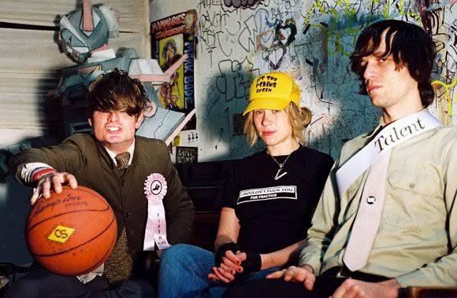
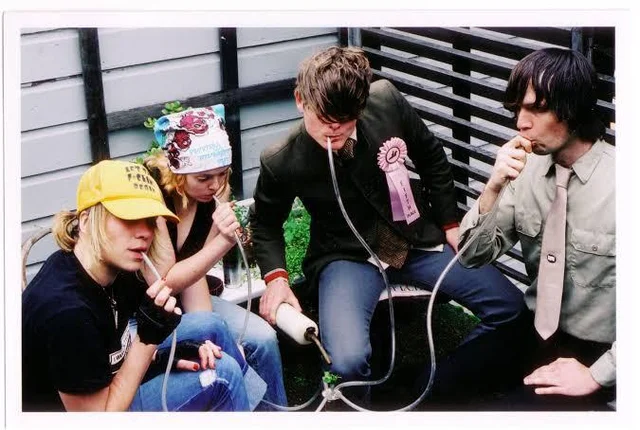
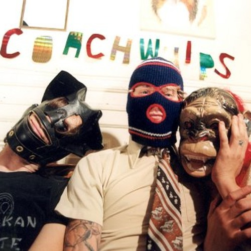
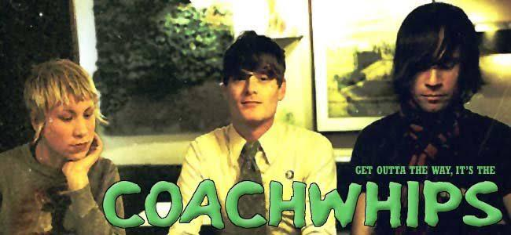

Coachwhips
Bangers vs. Fuckers
Noisy, groovy, fun punky rock. Really, really loud album. Nice speed, this definitely tickles my metal senses. Fuck, this is aweso- wait, it's already over? Let's grab a coffee and do this thing again!
Noisy, groovy, fun punky rock. Really, really loud album. Nice speed, this definitely tickles my metal senses. Fuck, this is aweso- wait, it's already over? Let's grab a coffee and do this thing again!

More of this, even grimer and more lo-fi
Pink & Brown
Similar style the first three songs
MetamorphosedHands on the Controls, is a (relatively) clear statement of purpose, filtering West Coast garage through the sensibilities of the Providence, Rhode Island scene Dwyer came from before relocating to San Francisco. The sound is one that takes an already fuzzed-out genre and pushes its pop leanings into the red, creating a sound that's equal parts infectious and abrasive.
While Coachwhips would only get better and better with albums like Get Yer Body Next ta Mine and Bangers vs Fuckers, Hands on the Controls is a scorcher of a debut that highlights a garage revival auteur's quest to add cacophony to chaos.
Get Yer Body Next Ta Mine simply has riffs and grooves. But they're likable riffs and grooves.

Rhythmic crash of Dwyer's guitar for a sound that fires wildly from a dark Memphis alley.
The Last Coachwhips album, and the beginnings of Oh Sees, Thee OhSees, Ohsees,
Double Death, the San Francisco band's posthumous double release of odds and sods, sounds like the scorched remains of a searing, gung-ho noise-punk career-- in this case, that's a compliment. Difficult as it is to imagine, these rarities actually further degenerate the band's already vestigial albeit effective take on punk rock. Some studio scraps, combined with eclectic covers ranging from the Kinks to the Velvet Underground to Adam and the Ants, nicely eulogize a career that burned bright, short, and most importantly, ass-kickingly.
